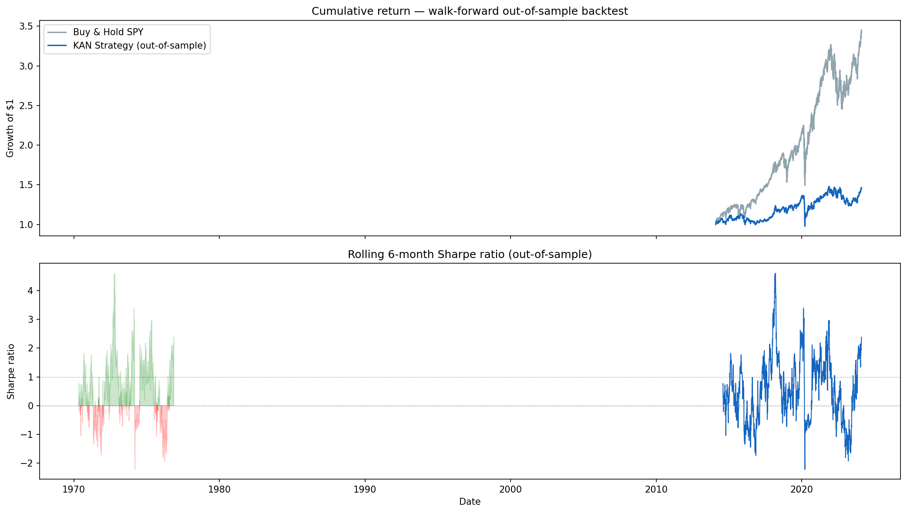
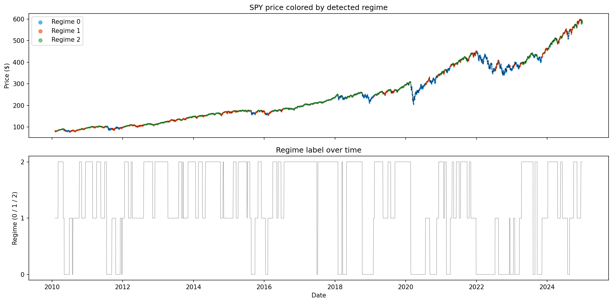
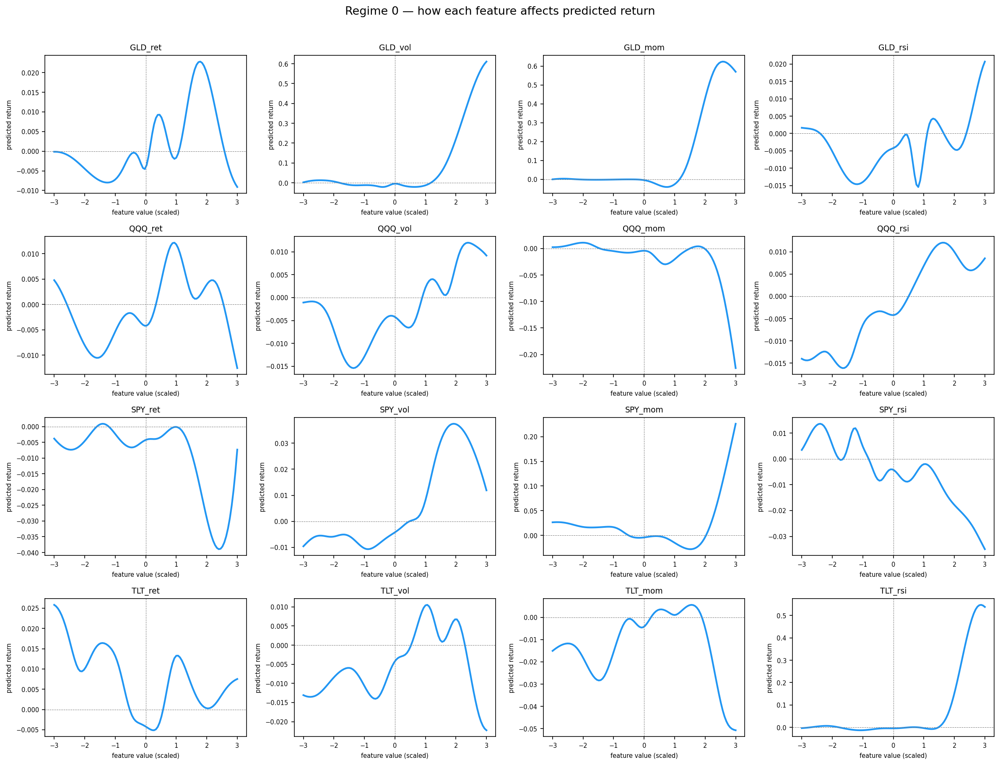
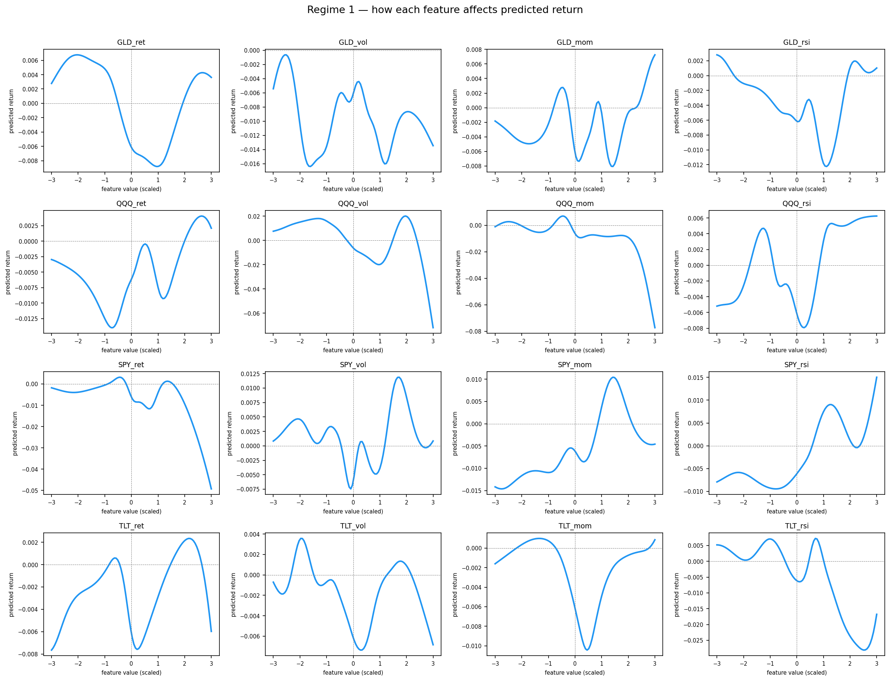
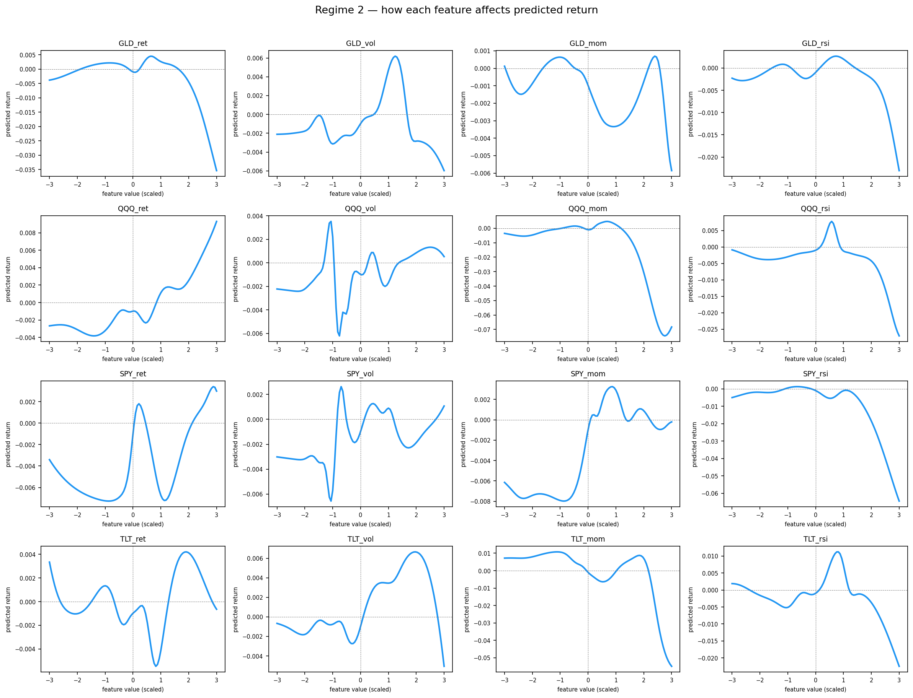

Fall 2026 – present
Speculative Decoding Research
Colgate University, Dr. Silvia Jiménez Bolaños — Hamilton, NY
Applied Math & CS — Colgate University
Senior building at the intersection of machine learning and applied mathematics. ML Research Fellow at the University of Maryland GAMMA Lab, ML Engineering Intern at DMEA.
Colgate University, Dr. Silvia Jiménez Bolaños — Hamilton, NY
GAMMA Lab, Dr. Ming Lin — College Park, MD
Manuscript in preparation, targeting CVPR 2027
DMEA — Montrose, CO
Return offer secured
Quant project, ML × quantitative finance
Most ML models applied to markets train one model on everything and hope it generalizes. This project challenges that assumption: first detect which market regime you’re in using a Hidden Markov Model, then route to a specialist Kolmogorov-Arnold Network trained only on days that looked structurally similar. KANs replace fixed activation functions with learnable spline curves, making the model’s logic directly readable. The result is a transparent, regime-aware system that surfaces cross-asset relationships invisible to single-model approaches.
Based on KASPER: Kolmogorov-Arnold Networks for Stock Prediction and Explainable Regimes, arXiv 2507.18983, July 2025. Read paper
| Measure | This strategy | Buy & hold SPY |
|---|---|---|
| Out-of-sample Sharpe | 0.38 | 0.80 |
| Annualized return | 3.9% | 13.2% |
| Annualized volatility | 11.8% | 17.5% |
| Max drawdown | −28.3% | −33.7% |
| Days in market | 44% | — |
Honest interpretation
The strategy underperforms buy-and-hold on raw return. The signal generator is conservative, spending ~56% of days in cash reduces volatility and max drawdown (−28.3% vs SPY’s −33.7%) but misses significant upside in sustained bull runs. This is a research proof-of-concept focused on interpretability and regime structure, not return maximization. The results are meaningful precisely because they are honest: walk-forward validation and careful leakage correction ensure no look-ahead bias inflates the numbers.
A Gaussian HMM on 16 cross-asset features (return, 20-day volatility, momentum, RSI across SPY/QQQ/GLD/TLT) identifies 3 hidden regimes without labeled data. Diagonal transition probabilities of ~0.97 confirm each regime is highly persistent, consistent with how real market environments behave.
In low-volatility bull regimes, post-hoc analysis of the learned spline activations reveals that bond momentum (TLT) predicts next-day SPY returns more reliably than equity momentum itself. When money flows into Treasuries, equity returns soften the following day. This cross-asset signal only surfaces when the model is allowed to specialize per regime rather than averaging across all conditions.
A 10-fold walk-forward protocol: 30 KANs and 10 HMMs retrained from scratch at each step using only past data, over a 1,008-day rolling train window stepped 252 days at a time. An initial backtest produced 6.28 Sharpe. It was caught, diagnosed as look-ahead leakage that had inflated results 16x, and corrected. The corrected 0.38 Sharpe is the honest number. Underperformance vs benchmark is reported, not hidden.





An image sharing platform built and deployed for Colgate’s 102-member photography club, handling uploads, gallery management, and role-based access. Maintained end-to-end, from frontend UI and backend API to deployment pipeline and iterative feature releases based on member feedback.
102 club members, live in production since Jan 2025
picgate.vercel.appFull-stack campus event discovery platform centralizing 200+ events per semester. Built with a 5-person Agile team on a two-week release cycle.
−40% posting errors via role-based auth
Visit siteA live browser-based tool for building and analyzing graph structures: create nodes, draw edges, and run graph algorithms interactively. Built to help myself and classmates study graph theory.
Open toolTrained a 22M-parameter transformer from scratch on mathematical and ML literature. Custom tokenizer for formal notation; implemented multi-head attention and full transformer architecture in PyTorch without using Hugging Face.
22M params, custom tokenizer, 70% efficiency gain vs baseline
Binary classification model for medical diagnosis prediction. Implemented linear and logistic regression from first principles: cost functions, gradient descent, and hyperparameter tuning without external ML libraries.
Inference-time contrastive sampling that builds its contrastive distribution from vision-encoder output tokens instead of re-encoding perturbed frames, so the extra forward pass over the visual backbone disappears. Evaluated on MVBench and TempCompass through VLMEvalKit, on Qwen2.5-VL-7B and confirmed on Qwen3-VL.
+16 pts MVBench, 68% less decoding overhead, PyTorch
MLP regressor over 50+ engineered features and 100k+ rows, with automated preprocessing: Yeo–Johnson normalization, one-hot encoding, data validation. Validated on a held-out future period as well as cross-validation, then deployed for live business forecasting.
R² = 0.98 held out, scikit-learn, production
Scraped and preprocessed technical math/ML content; built a custom tokenizer for formal notation; implemented multi-head attention and transformer architecture from scratch using PyTorch.
22M params, PyTorch, custom tokenizer
Built linear and logistic regression without ML libraries. Derived cost functions, implemented gradient descent and hyperparameter tuning by hand. Strong mathematical foundation in optimization.
NumPy, first principles, no sklearn
Real Analysis, Linear Algebra, Numerical Analysis, Introduction to Statistics, Graph Theory, Data Structures & Algorithms, Computational Mathematics, Calculus I–III, Discrete Math, Combinatorics. Upcoming: Applied Machine Learning, Algorithmic Game Theory, Stochastic Calculus.
3.8 cumulative, 3.96 major, Dean’s Award × 6 semesters